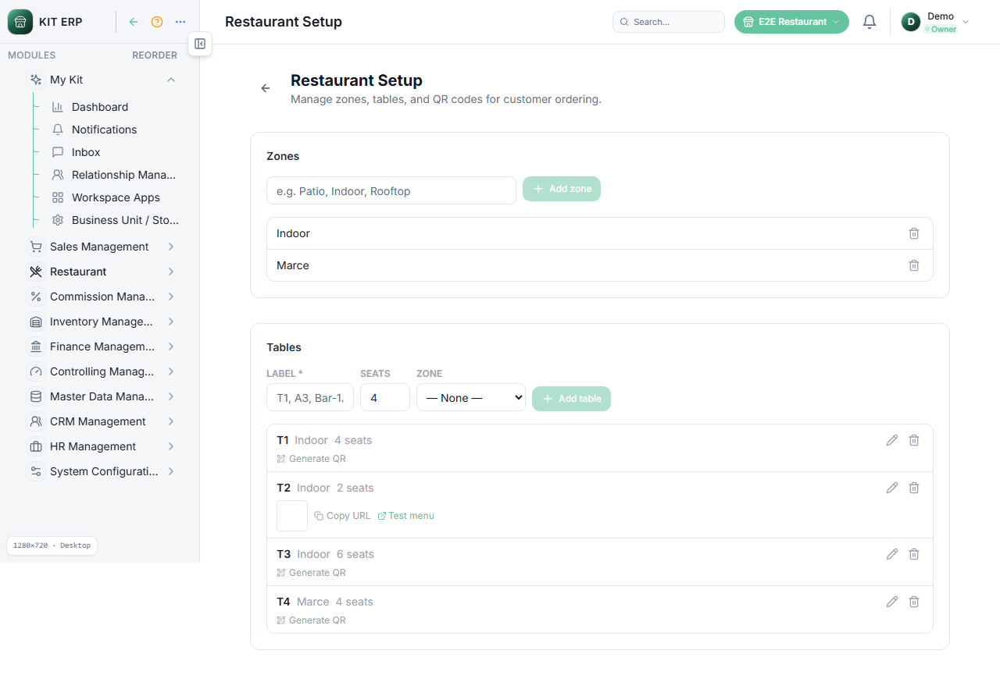
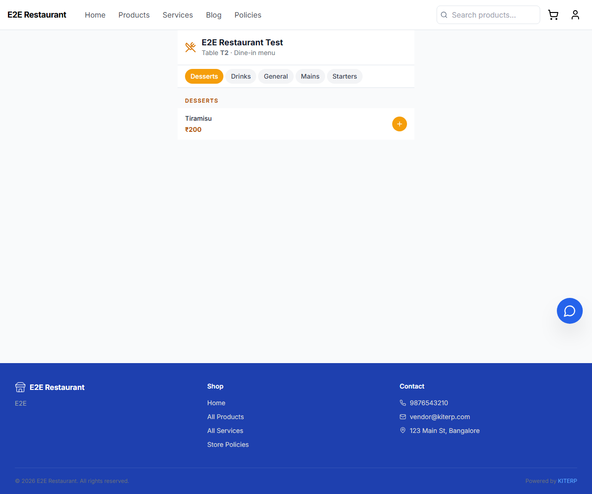
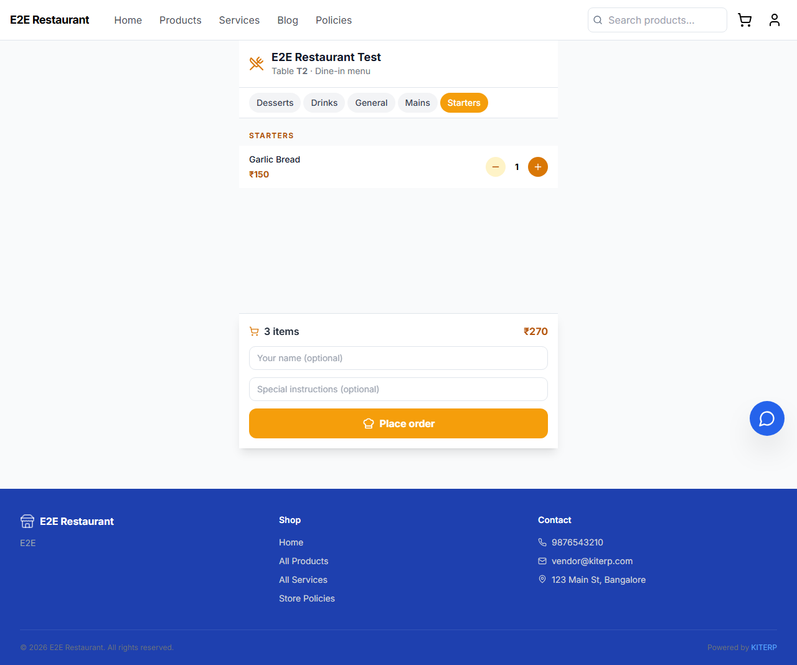
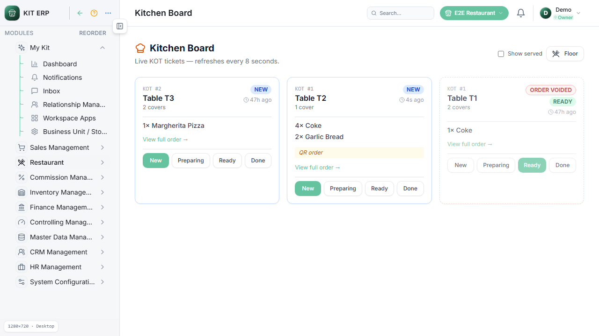
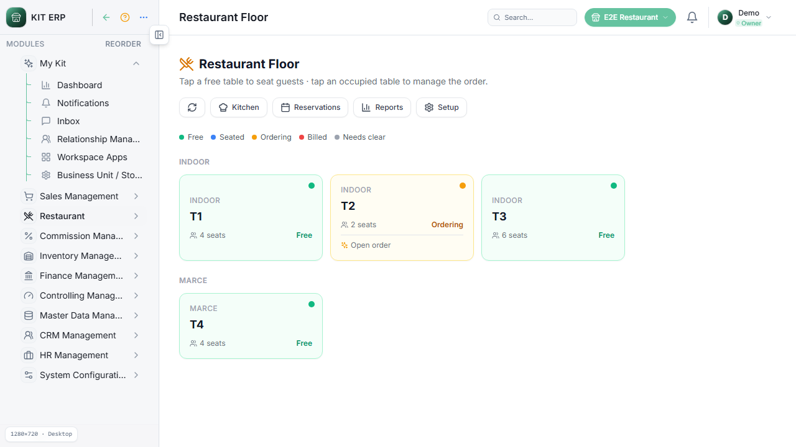
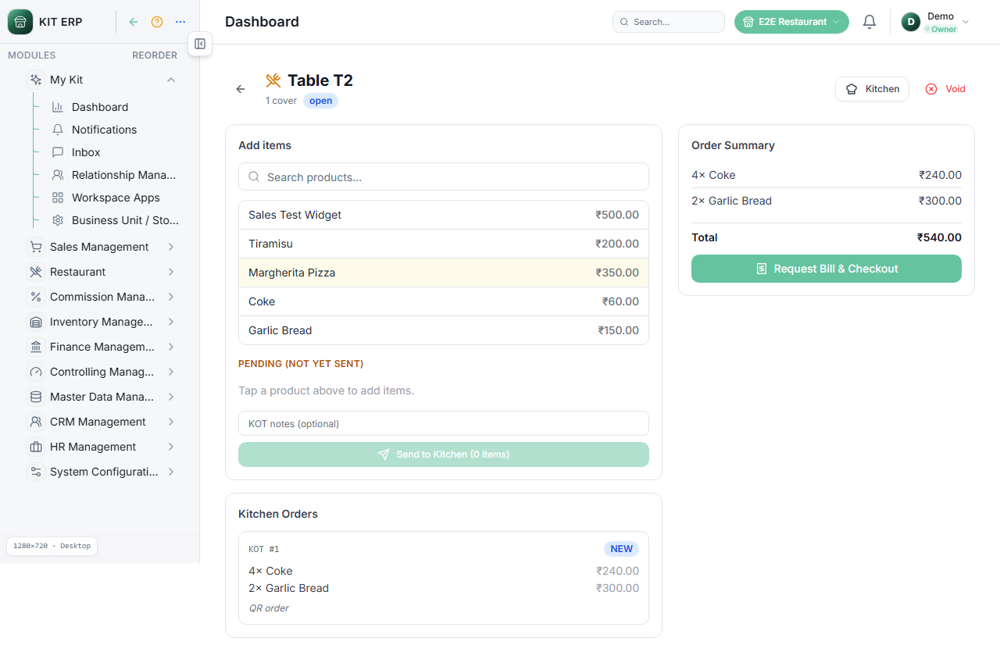
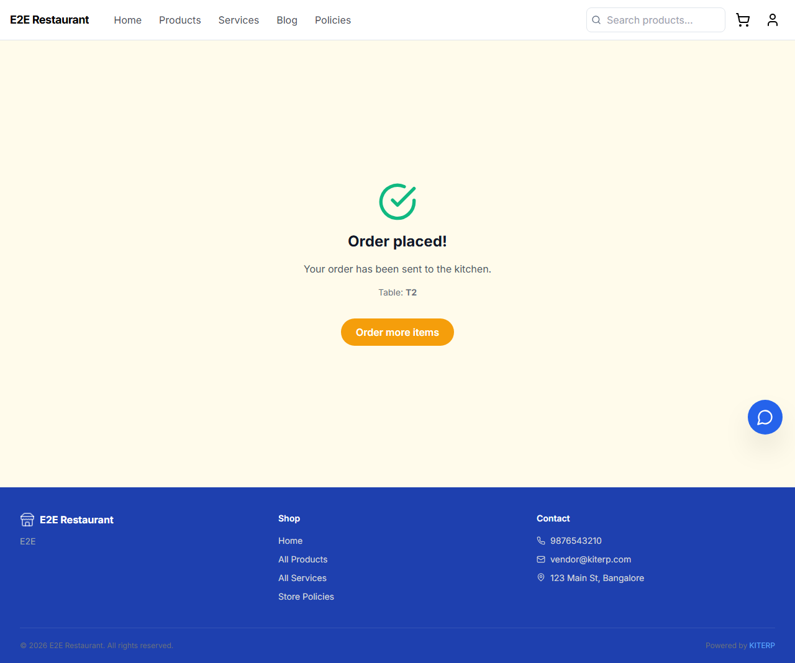
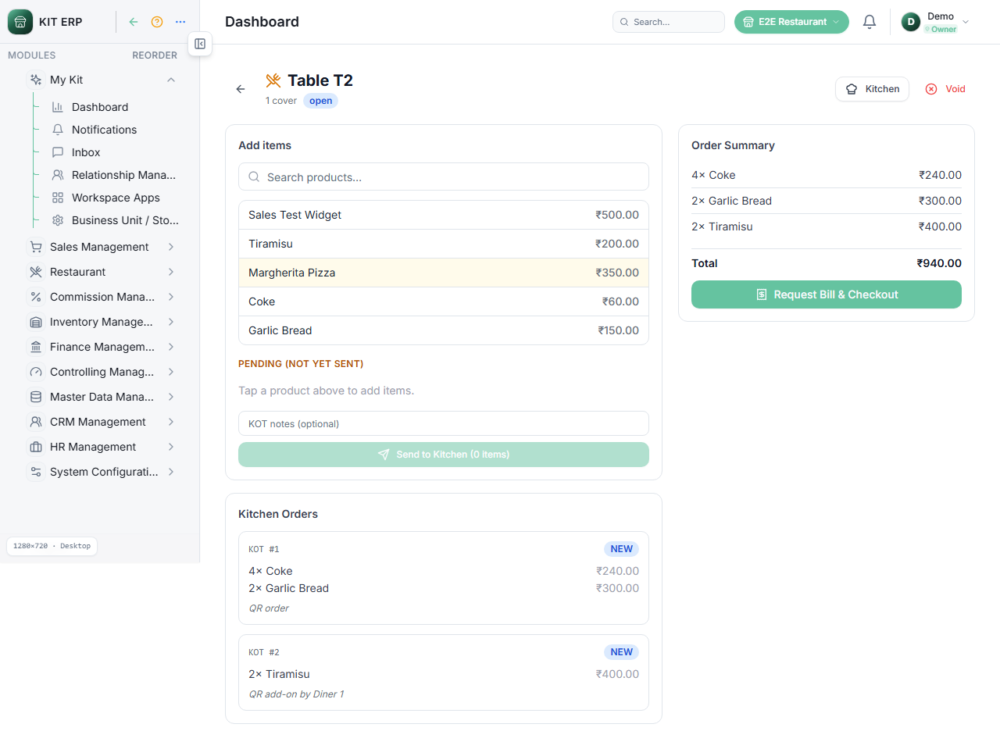

Scenario 2 — Customer QR self-order
10/10 steps passed · 30/5/2026, 11:43:21 pm
PASS 2.1 — Setup shows T2 with QR

PASS 2.2 — Storefront menu URL
http://127.0.0.1:3002/store/e2e-restaurant-2b3507ba/table/LcKJ36zYc5M4wu_u4pXJYfDgNqTdq6IC
PASS 2.3 — Guest menu loads for T2

PASS 2.4–2.6 — Cart has 3 items

PASS 2.7 — Order placed

PASS 2.8 — Kitchen KOT for T2

PASS 2.9 — Floor T2 ordering

PASS 2.10 — Vendor order shows QR items

PASS 2.11 — Second batch placed

PASS 2.12 — Two KOTs on order page
